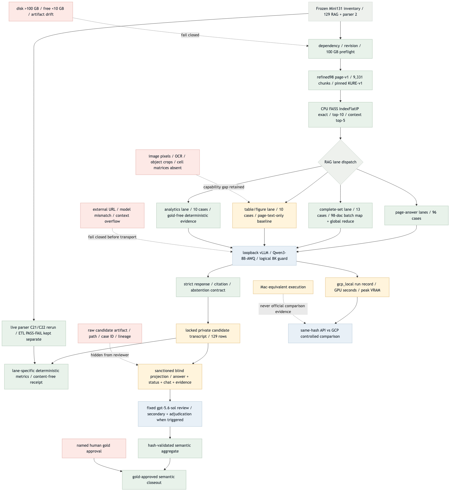
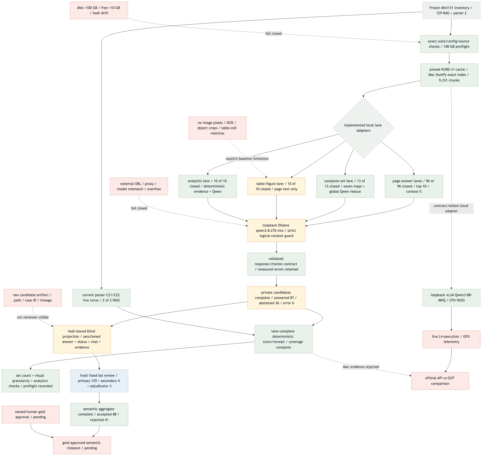

Target Flow
{kind=link}

refined98 · KURE · exact dense retrieval · Mac Qwen equivalent · GCP vLLM target · 2026-09-01
Current closeout: RAG 129/129, parser 2/2, lane-complete deterministic receipt and the fresh Sol semantic aggregate are complete. Named human gold approval and live L4 telemetry are not closed. The result remains mac_local_equivalent, official=false, passed=false and provisional.


candidate_output_visible_to_reviewer=false hides the raw candidate artifact, file path, case ID and lineage metadata. The sanctioned hash-bound blind projection still exposes the answer/status, required chat context and retrieved/cited evidence needed to apply the frozen rubric.
Content-free public semantic receipt
| ID | Node / edge | Status | Evidence / remaining gate |
|---|---|---|---|
| G1 | refined98 → pinned KURE cache/exact index | MATCHED — measured | 98 documents, 9,331 chunks and 1,024-d normalized vectors are hash-validated on Mac; FAISS reproduction remains a live L4 gate. |
| G2 | Mini131 inventory → candidate coverage | MATCHED — measured | 129/129 RAG terminal rows: 87 answered, 36 abstained and 6 retained errors. |
| G3 | Answer/set/visual/analytics adapters | MATCHED — executed | Page-answer 96, set 13, visual 10 and analytics 10 all reached terminal states. |
| G4 | Parser C21/C22 → separate ETL result | MATCHED — measured | Fresh 2/2 PASS, kept outside the 129-case RAG semantic mean. |
| G5 | Private transcript → deterministic diagnostics | MATCHED — measured | Recall@1/5/10 is 0.921986/0.987589/0.991135 and MRR@10 is 1.0; errors stay in denominators. |
| G6 | Diagnostics → lane-complete receipt | MATCHED — remediated | Metric coverage complete: set count accuracy 0.538462; visual document/page Recall@10 1.0/0.6, object 0; analytics 10/10 and 139/139 comparisons pass. Map preflight is 5,094 tokens; the 102,687-token worst-case final stress probe is rejected before transport and is not a readiness gate. |
| G7 | Raw candidate → sanctioned blind projection | MATCHED — contract | Raw identity/lineage is hidden while rubric-required answer/status/chat/evidence is hash-bound. |
| G8 | Blind projection → fresh Sol aggregate | MATCHED — measured | Primary 129, secondary 4, adjudicator 3; accepted 88, rejected 41, acceptance 0.682171, mean 70.135659. |
| G9 | Semantic aggregate + named human gold | BLOCKED | The semantic ledger is complete but gold remains draft; named approval is required. |
| G10 | Loopback vLLM → live L4 telemetry | BLOCKED | Requires explicit VM authorization plus measured gpu_seconds and peak_vram_gb. |
| G11 | Official GCP result → API↔GCP comparison | BLOCKED | Requires valid same-hash gcp_local records; Mac evidence is rejected. |
| Rank | Work unit | Score | State / next action |
|---|---|---|---|
| 1 | Mini131 candidate + parser execution | 10 | DONE — preserve 129 RAG terminal records, parser 2/2 and 6 measured errors |
| 2 | Lane-complete deterministic scorer/receipt | 9 | DONE — metric coverage and global-set overflow policy validated |
| 3 | Fresh Sol semantic aggregate | 8 | DONE — exact role counts and adjudication workflow validated |
| 4 | Named human gold approval | 7 | BLOCKED — independent external review |
| 5 | Live Qwen3-8B-AWQ/vLLM L4 run | 7 | BLOCKED — explicit authorization and complete telemetry |
| 6 | API↔GCP controlled comparison | 6 | BLOCKED — depends on valid official GCP records |
Upstream 0–4 + connection 0–3 + safety 0–2 + validation 0–2 + risk −3–0. Security rewards loopback transport, raw-artifact isolation, hash-bound blind projection, content-free receipts and false-label prevention.
mmdc 11.15.0, transparent background and scale 2.fivecircles/test/playwright-screenshots/.{kind=link}